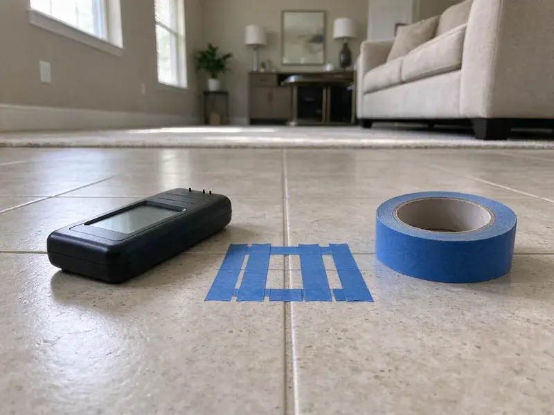

New Construction Plumbing in Derby, KS
KRV Plumbing plumbs new homes and light commercial buildings across Derby, KS, from the sewer tap to trim-out.
- Quick Bids From Your Plans
- Fast Project Consultations
- Long-Life Materials
- Seasoned Plumbers

Get Your New Build Plumbed Right on the First Pass in Derby, KS.
Get an itemized new construction plumbing quote from KRV Plumbing within the week.
Reliable New Construction Plumbing for Your Home in Derby, KS
KRV Plumbing works alongside general contractors and owner-builders across the Derby area. Our underground crew can be on site the morning after forms go up. Plans change mid-build, so we price change orders in writing before we move a single stub-out or add a hose bib. Nobody gets a surprise bill at trim.
Our expertise includes:
- PEX-A home-run manifolds and copper mains sized for your fixture count.
- Water supply piping plus drain, waste and vent systems.
- Tank and tankless water heater installs.

Additional Plumbing Maintenance Services in Derby, KS
Our maintenance and specialty plumbing services in Derby, KS protect your home year-round and extend the life of every system.


Customers
Why Choose KRV Plumbing for New Construction Plumbing in Derby, KS?
Site cleanliness counts more than people think. Cutoffs and empty primer cans leave with our truck every day. Nobody on site should be stepping over our cutoffs or moving a coil of PEX to get to their own work. Small thing, but supers notice.
- Durable Piping, Piping and fixtures are matched to Kansas' climate and soil, with insulation wherever lines could freeze.
- Proper Materials, Pipe and fittings are chosen for local water and soil, not just for the lowest price.
- Built to Code, Work follows the Kansas plumbing code and any Derby amendments, which keeps reinspection fees off your bill.
Citywide Coverage
Distance does not change our schedule. Lots across town get the same booking window as the ones nearby. Every truck carries PVC fittings and PEX plus a test kit, so a missing coupling seldom sends anyone to the supply house.
Experienced Team
One crew lead stays with your project from underground to trim. You get that lead's cell number. A question about a stub height goes to the person who set it, not to a dispatcher.
Safety-First Approach
Safe work on a new build starts with the people next to us. Open trenches get covered every evening. Our solvent cement and primer stay capped and away from ignition sources, and torch work on copper always has a fire extinguisher within reach and a fire watch afterward.
Trusted Certified Derby Plumbing Services Professionals
At KRV Plumbing, we are proud to offer certified plumbing services throughout Derby, KS. Those papers on the wall mean something. Our plumbers hold recognized industry credentials, and they follow strict safety and quality rules on every repair, installation and maintenance call we run.
Call Us Now PHCC Plumbing Contractor Recognition
PHCC Plumbing Contractor Recognition Better Business Bureau (BBB) Accreditation
Better Business Bureau (BBB) Accreditation Angi Certified Pro
Angi Certified Pro ISO 9001 Quality Management Certification
ISO 9001 Quality Management CertificationDependable New Construction Plumbing Services in Derby, KS
Rough-In Plumbing Services in Derby
Top-out is the second half of rough-in, after framing. Supply lines, drains and vents go through the framing and up to the roof, with stub-outs set to the cabinet drawings. Testing comes next. Drains get a water test, filled to the highest fitting, and supply lines hold pressure on a gauge while the inspector walks it.

Final Trim and Fixture Setting in Derby
At trim we install toilets, faucets, garbage disposals and dishwashers, plus ice maker boxes and laundry connections. Each fixture runs long enough to show a leak. Hot goes on the left, the heater gets set to 120 degrees, and aerators get cleaned of the grit that comes through new lines. Then the walkthrough.
Water Heater Installation for New Builds in Derby
Picking the water heater during design avoids rerunning gas or vent piping at trim. A 50-gallon tank covers most three-bedroom homes. Tankless units suit bigger houses but need a larger gas line and their own vent route, both planned at rough-in. Expansion tanks and drain pans go in where code requires.
Residential New Construction Plumbing in Derby
Layout drives cost on a house. Grouping the kitchen, laundry and baths along one wet wall can cut a few hundred feet of pipe out of a plan. Plan review is where we flag them. Changing a bath location on paper costs nothing, while moving it after the slab is poured means a saw cut and a new drain trench.
Guest House, ADU and Addition Plumbing in Derby, KS
Guest houses and additions have to tie into the existing house without overloading old drain lines. Before tying in, we run a camera down the existing sewer. An old clay or cast iron line with a belly will back up under the new load, so we want to know that before we trench. Water service size gets checked too.
New Home Plumbing for New Builds in Derby
A new single-family house usually needs a 3/4-inch or 1-inch water service, a 4-inch building drain and somewhere between 20 and 40 fixture connections. Private wells serve many rural homes, and minerals, sediment, and nitrates make periodic well testing a good habit. We plan supply materials and any softener or filter loop around that water before rough-in starts. Pipe size comes from the fixture count. Undersized supply lines are the main reason a new house has weak showers when the dishwasher runs.
Tank and Tankless Heater Setup for New Builds in Derby
Tank or tankless, the venting decides the install location. Atmospheric tanks need a metal flue straight up, and power-vent or condensing units can go out a sidewall in PVC. We set the heater on a stand in a garage where code requires it. Every one gets a T&P line piped to an approved spot.

Rough-In and Top-Out Plumbing in Derby, KS
Once framing is up, our crew runs supply and vent lines through the walls and attic. Stub-outs go where the cabinet and tile drawings put them, not where it is easy to drill. Steel nail plates cover any pipe close to a stud face. Shower valves get set to the finished wall depth the tile setter gives us, which saves cutting tile around a trim plate that sits too deep.
New Construction Plumbing Close By in Derby, KS
Your framing crew should never sit idle waiting on a plumber. Because our crews are nearby, top-out can usually begin the same morning that the framing inspection clears. An idle day still costs the builder.
Searching for a new construction plumber near me in Derby usually starts a week before forms go up. A crew lead can usually walk the lot within two days. With the plan set in hand, we mark stub locations on the form boards ahead of the concrete crew. The underground follows right after.
KRV Plumbing at a Glance
- Fully licensed plumbing team covering Derby, KS
- 24/7 emergency service with same-day scheduling
- Upfront, flat-rate pricing before work begins
- 4.9-star rated by 910+ Kansas customers
Derby Map
Derby Information
- Population
- 26,233
- Area codes
- Local
- Service area
- Derby and towns within a 40 mile drive
- Nearby
- Wichita, Hutchinson, Emporia, Salina
Drain lines under a new slab have to hold their grade for decades. Much of Kansas has expansive clay soil that swells when wet and shrinks in drought, which can move foundations and stress buried pipes. We bed and backfill every run with that in mind.
Talk to a Plumber
Call KRV Plumbing for reliable plumbing work done by licensed pros in Derby, KS.
Our Specialized Plumbing Services in Derby, KS
At KRV Plumbing, we handle the full list of plumbing services across Derby, KS. From leak detection to full system installs, our team works fast and charges fair prices on homes and commercial properties alike. Explore our core services below:


How We Handle a New Build in Derby, KS
Our process follows the same phases your inspector does, so every phase is ready for its inspection.
Request a Quote
Call (316) 229-8459 to schedule a consultation. We review the blueprints and talk through budget and timeline.
Layout Planning
We help with layout and pipe sizing so the system fits the house. Water heater location gets settled now.
Rough-In Installation
Supply lines, drains and vents go in before the walls close. Everything is tested and inspected.
Frequently Asked Questions About New Construction Plumbing in Derby
Most new single-family homes in the Derby area cost between $12,000 and $25,000 to plumb, with larger custom homes running higher. Each added bathroom adds several thousand dollars. Tankless heaters and gas runs add to it. We give a fixed bid per phase so you know the number before the slab is poured and do not get hit with surprise charges at trim.
Yes, softeners are easy to plan in. Private wells serve many rural homes, and minerals, sediment, and nitrates make periodic well testing a good habit. We run a loop to the garage or utility room with a bypass valve and a drain, and leave the kitchen cold water and outside hose bibs on hard water. A loop at rough-in is cheap.
Strong winds and dry spells can pull moisture out of the soil, while sudden cold fronts can drop temperatures sharply overnight. Hard freezes happen every winter in Kansas, and pipes in exterior walls, garages, and crawlspaces are the most at risk. Pipe routes and insulation get chosen to match. That can mean keeping supply lines out of exterior walls, insulating attic runs, and setting frost-free hose bibs that drain back inside the heated space. Attics get the most attention.
The term is written into your contract before work starts. It covers our labor and the fittings we supply. Manufacturer warranties cover fixtures and heaters, and we register the water heater in your name at final.
PEX-A is our default for water supply in Kansas homes. It tolerates hot water and avoids the pinhole leaks copper can develop in some water. We run drains in Schedule 40 PVC. Under slabs, we keep joints to a minimum and use long-sweep fittings at every change of direction so a cable or camera can get through later.
Yes, new construction plumbing in Derby, KS requires a permit and inspections. The plumbing scope is usually part of the general building permit, though some jurisdictions issue a separate plumbing permit to the licensed contractor. We handle our side of it.
Slow drains in a brand-new house are the first sign. Gurgling or a sewer smell usually means a vent or slope issue. A camera inspection through the cleanout will show a belly, an offset joint or debris left in the line, and it is worth doing before the builder's warranty period ends. Construction debris is common.
Scheduling causes most of the trouble. Pushed pours and framing changes tend to pile phases together. Plan changes after rough-in are the other big one, because moving a tub or adding a bar sink once walls are framed means re-drilling and new inspections. We price changes in writing first.
What People Are Saying About Our Plumbing Experts?

Lisa C.
Water was pouring out from under the washing machine on a holiday weekend. KRV Plumbing talked me through closing the valves over the phone and had a plumber at the house within ninety minutes. It was a burst fill hose.
Emergency Plumbing · Hutchinson, KS
Sofia M.
Two new toilets went in during one visit. The tech set them on new wax rings and swapped the old supply lines. He also noticed our bathroom faucet dripping and replaced the cartridge while he was there. No mess left behind.
Toilet Installation · Derby, KS
Angela D.
Our sump pump quit during a storm and the water was an inch from the basement carpet. KRV Plumbing put in a new pump with a battery backup that same evening. We have had two heavy rains since. It kicked on both times.
Sump Pump · Salina, KS
Brian W.
I smelled gas behind the dryer and called right away. The plumber found a corroded flex connector, replaced it, and pressure tested the whole line before turning the gas back on. He let me watch the gauge hold steady for fifteen minutes.
Gas Line Repair · Salina, KSGreg S.
I manage a small strip center with six tenants. KRV Plumbing handles our annual backflow testing and fixed a recurring clog in the shared sewer line that had been backing into the nail salon. Their reports come in clean and on time.
Commercial Plumbing · Junction City, KS
Marcus H.
Grease from the fryer line kept clogging the kitchen drain at my diner. KRV Plumbing hydro jetted the line after closing, showed me the buildup on camera, and set us up on a quarterly cleaning so it does not catch us on a Friday again.
Drain Cleaning · Junction City, KS